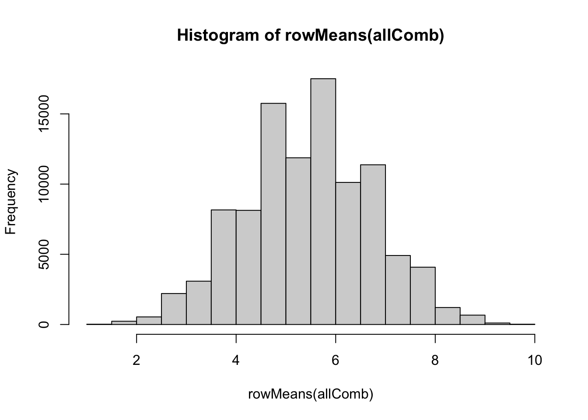

Chapter 2 Sampling Distribution
2.1 Sampling
2.1.1 Simple Random Sampling
Sampling from 1 to 10, sample size = 5
Simple random sampling with replacement
## [1] 10 6 5 9 5Simple random sampling without replacement
## [1] 6 4 2 7 102.1.2 Stratified Sampling
Use mtcars dataset as an example
| mpg | cyl | disp | hp | drat | wt | qsec | vs | am | gear | carb | |
|---|---|---|---|---|---|---|---|---|---|---|---|
| Mazda RX4 | 21.0 | 6 | 160.0 | 110 | 3.90 | 2.620 | 16.46 | 0 | 1 | 4 | 4 |
| Mazda RX4 Wag | 21.0 | 6 | 160.0 | 110 | 3.90 | 2.875 | 17.02 | 0 | 1 | 4 | 4 |
| Datsun 710 | 22.8 | 4 | 108.0 | 93 | 3.85 | 2.320 | 18.61 | 1 | 1 | 4 | 1 |
| Hornet 4 Drive | 21.4 | 6 | 258.0 | 110 | 3.08 | 3.215 | 19.44 | 1 | 0 | 3 | 1 |
| Hornet Sportabout | 18.7 | 8 | 360.0 | 175 | 3.15 | 3.440 | 17.02 | 0 | 0 | 3 | 2 |
| Valiant | 18.1 | 6 | 225.0 | 105 | 2.76 | 3.460 | 20.22 | 1 | 0 | 3 | 1 |
| Duster 360 | 14.3 | 8 | 360.0 | 245 | 3.21 | 3.570 | 15.84 | 0 | 0 | 3 | 4 |
| Merc 240D | 24.4 | 4 | 146.7 | 62 | 3.69 | 3.190 | 20.00 | 1 | 0 | 4 | 2 |
| Merc 230 | 22.8 | 4 | 140.8 | 95 | 3.92 | 3.150 | 22.90 | 1 | 0 | 4 | 2 |
| Merc 280 | 19.2 | 6 | 167.6 | 123 | 3.92 | 3.440 | 18.30 | 1 | 0 | 4 | 4 |
| Merc 280C | 17.8 | 6 | 167.6 | 123 | 3.92 | 3.440 | 18.90 | 1 | 0 | 4 | 4 |
| Merc 450SE | 16.4 | 8 | 275.8 | 180 | 3.07 | 4.070 | 17.40 | 0 | 0 | 3 | 3 |
| Merc 450SL | 17.3 | 8 | 275.8 | 180 | 3.07 | 3.730 | 17.60 | 0 | 0 | 3 | 3 |
| Merc 450SLC | 15.2 | 8 | 275.8 | 180 | 3.07 | 3.780 | 18.00 | 0 | 0 | 3 | 3 |
| Cadillac Fleetwood | 10.4 | 8 | 472.0 | 205 | 2.93 | 5.250 | 17.98 | 0 | 0 | 3 | 4 |
| Lincoln Continental | 10.4 | 8 | 460.0 | 215 | 3.00 | 5.424 | 17.82 | 0 | 0 | 3 | 4 |
| Chrysler Imperial | 14.7 | 8 | 440.0 | 230 | 3.23 | 5.345 | 17.42 | 0 | 0 | 3 | 4 |
| Fiat 128 | 32.4 | 4 | 78.7 | 66 | 4.08 | 2.200 | 19.47 | 1 | 1 | 4 | 1 |
| Honda Civic | 30.4 | 4 | 75.7 | 52 | 4.93 | 1.615 | 18.52 | 1 | 1 | 4 | 2 |
| Toyota Corolla | 33.9 | 4 | 71.1 | 65 | 4.22 | 1.835 | 19.90 | 1 | 1 | 4 | 1 |
| Toyota Corona | 21.5 | 4 | 120.1 | 97 | 3.70 | 2.465 | 20.01 | 1 | 0 | 3 | 1 |
| Dodge Challenger | 15.5 | 8 | 318.0 | 150 | 2.76 | 3.520 | 16.87 | 0 | 0 | 3 | 2 |
| AMC Javelin | 15.2 | 8 | 304.0 | 150 | 3.15 | 3.435 | 17.30 | 0 | 0 | 3 | 2 |
| Camaro Z28 | 13.3 | 8 | 350.0 | 245 | 3.73 | 3.840 | 15.41 | 0 | 0 | 3 | 4 |
| Pontiac Firebird | 19.2 | 8 | 400.0 | 175 | 3.08 | 3.845 | 17.05 | 0 | 0 | 3 | 2 |
| Fiat X1-9 | 27.3 | 4 | 79.0 | 66 | 4.08 | 1.935 | 18.90 | 1 | 1 | 4 | 1 |
| Porsche 914-2 | 26.0 | 4 | 120.3 | 91 | 4.43 | 2.140 | 16.70 | 0 | 1 | 5 | 2 |
| Lotus Europa | 30.4 | 4 | 95.1 | 113 | 3.77 | 1.513 | 16.90 | 1 | 1 | 5 | 2 |
| Ford Pantera L | 15.8 | 8 | 351.0 | 264 | 4.22 | 3.170 | 14.50 | 0 | 1 | 5 | 4 |
| Ferrari Dino | 19.7 | 6 | 145.0 | 175 | 3.62 | 2.770 | 15.50 | 0 | 1 | 5 | 6 |
| Maserati Bora | 15.0 | 8 | 301.0 | 335 | 3.54 | 3.570 | 14.60 | 0 | 1 | 5 | 8 |
| Volvo 142E | 21.4 | 4 | 121.0 | 109 | 4.11 | 2.780 | 18.60 | 1 | 1 | 4 | 2 |
If we want to sample 10 cars from mtcars dataset and stratified by cyl…
The easiest way to do stratified sampling is using strata function from sampling package. If you never install sampling package, you need to install it install.package("sampling") first.
library(sampling)
sample_n<-round(table(mtcars$cyl)/(nrow(mtcars)/10),0)
strata(mtcars,stratanames = "cyl",size = sample_n)## Warning in strata(mtcars, stratanames = "cyl", size = sample_n): the method is
## not specified; by default, the method is srswor## cyl ID_unit Prob Stratum
## 2 6 2 0.4285714 1
## 6 6 6 0.4285714 1
## 11 6 11 0.4285714 1
## 18 4 18 0.1818182 2
## 26 4 26 0.1818182 2
## 13 8 13 0.2857143 3
## 14 8 14 0.2857143 3
## 17 8 17 0.2857143 3
## 31 8 31 0.2857143 32.2 Sampling Distribution
Use iris dataset as an example
| Sepal.Length | Sepal.Width | Petal.Length | Petal.Width | Species |
|---|---|---|---|---|
| 5.1 | 3.5 | 1.4 | 0.2 | setosa |
| 4.9 | 3.0 | 1.4 | 0.2 | setosa |
| 4.7 | 3.2 | 1.3 | 0.2 | setosa |
| 4.6 | 3.1 | 1.5 | 0.2 | setosa |
| 5.0 | 3.6 | 1.4 | 0.2 | setosa |
| 5.4 | 3.9 | 1.7 | 0.4 | setosa |
| 4.6 | 3.4 | 1.4 | 0.3 | setosa |
| 5.0 | 3.4 | 1.5 | 0.2 | setosa |
| 4.4 | 2.9 | 1.4 | 0.2 | setosa |
| 4.9 | 3.1 | 1.5 | 0.1 | setosa |
| 5.4 | 3.7 | 1.5 | 0.2 | setosa |
| 4.8 | 3.4 | 1.6 | 0.2 | setosa |
| 4.8 | 3.0 | 1.4 | 0.1 | setosa |
| 4.3 | 3.0 | 1.1 | 0.1 | setosa |
| 5.8 | 4.0 | 1.2 | 0.2 | setosa |
| 5.7 | 4.4 | 1.5 | 0.4 | setosa |
| 5.4 | 3.9 | 1.3 | 0.4 | setosa |
| 5.1 | 3.5 | 1.4 | 0.3 | setosa |
| 5.7 | 3.8 | 1.7 | 0.3 | setosa |
| 5.1 | 3.8 | 1.5 | 0.3 | setosa |
| 5.4 | 3.4 | 1.7 | 0.2 | setosa |
| 5.1 | 3.7 | 1.5 | 0.4 | setosa |
| 4.6 | 3.6 | 1.0 | 0.2 | setosa |
| 5.1 | 3.3 | 1.7 | 0.5 | setosa |
| 4.8 | 3.4 | 1.9 | 0.2 | setosa |
| 5.0 | 3.0 | 1.6 | 0.2 | setosa |
| 5.0 | 3.4 | 1.6 | 0.4 | setosa |
| 5.2 | 3.5 | 1.5 | 0.2 | setosa |
| 5.2 | 3.4 | 1.4 | 0.2 | setosa |
| 4.7 | 3.2 | 1.6 | 0.2 | setosa |
| 4.8 | 3.1 | 1.6 | 0.2 | setosa |
| 5.4 | 3.4 | 1.5 | 0.4 | setosa |
| 5.2 | 4.1 | 1.5 | 0.1 | setosa |
| 5.5 | 4.2 | 1.4 | 0.2 | setosa |
| 4.9 | 3.1 | 1.5 | 0.2 | setosa |
| 5.0 | 3.2 | 1.2 | 0.2 | setosa |
| 5.5 | 3.5 | 1.3 | 0.2 | setosa |
| 4.9 | 3.6 | 1.4 | 0.1 | setosa |
| 4.4 | 3.0 | 1.3 | 0.2 | setosa |
| 5.1 | 3.4 | 1.5 | 0.2 | setosa |
| 5.0 | 3.5 | 1.3 | 0.3 | setosa |
| 4.5 | 2.3 | 1.3 | 0.3 | setosa |
| 4.4 | 3.2 | 1.3 | 0.2 | setosa |
| 5.0 | 3.5 | 1.6 | 0.6 | setosa |
| 5.1 | 3.8 | 1.9 | 0.4 | setosa |
| 4.8 | 3.0 | 1.4 | 0.3 | setosa |
| 5.1 | 3.8 | 1.6 | 0.2 | setosa |
| 4.6 | 3.2 | 1.4 | 0.2 | setosa |
| 5.3 | 3.7 | 1.5 | 0.2 | setosa |
| 5.0 | 3.3 | 1.4 | 0.2 | setosa |
| 7.0 | 3.2 | 4.7 | 1.4 | versicolor |
| 6.4 | 3.2 | 4.5 | 1.5 | versicolor |
| 6.9 | 3.1 | 4.9 | 1.5 | versicolor |
| 5.5 | 2.3 | 4.0 | 1.3 | versicolor |
| 6.5 | 2.8 | 4.6 | 1.5 | versicolor |
| 5.7 | 2.8 | 4.5 | 1.3 | versicolor |
| 6.3 | 3.3 | 4.7 | 1.6 | versicolor |
| 4.9 | 2.4 | 3.3 | 1.0 | versicolor |
| 6.6 | 2.9 | 4.6 | 1.3 | versicolor |
| 5.2 | 2.7 | 3.9 | 1.4 | versicolor |
| 5.0 | 2.0 | 3.5 | 1.0 | versicolor |
| 5.9 | 3.0 | 4.2 | 1.5 | versicolor |
| 6.0 | 2.2 | 4.0 | 1.0 | versicolor |
| 6.1 | 2.9 | 4.7 | 1.4 | versicolor |
| 5.6 | 2.9 | 3.6 | 1.3 | versicolor |
| 6.7 | 3.1 | 4.4 | 1.4 | versicolor |
| 5.6 | 3.0 | 4.5 | 1.5 | versicolor |
| 5.8 | 2.7 | 4.1 | 1.0 | versicolor |
| 6.2 | 2.2 | 4.5 | 1.5 | versicolor |
| 5.6 | 2.5 | 3.9 | 1.1 | versicolor |
| 5.9 | 3.2 | 4.8 | 1.8 | versicolor |
| 6.1 | 2.8 | 4.0 | 1.3 | versicolor |
| 6.3 | 2.5 | 4.9 | 1.5 | versicolor |
| 6.1 | 2.8 | 4.7 | 1.2 | versicolor |
| 6.4 | 2.9 | 4.3 | 1.3 | versicolor |
| 6.6 | 3.0 | 4.4 | 1.4 | versicolor |
| 6.8 | 2.8 | 4.8 | 1.4 | versicolor |
| 6.7 | 3.0 | 5.0 | 1.7 | versicolor |
| 6.0 | 2.9 | 4.5 | 1.5 | versicolor |
| 5.7 | 2.6 | 3.5 | 1.0 | versicolor |
| 5.5 | 2.4 | 3.8 | 1.1 | versicolor |
| 5.5 | 2.4 | 3.7 | 1.0 | versicolor |
| 5.8 | 2.7 | 3.9 | 1.2 | versicolor |
| 6.0 | 2.7 | 5.1 | 1.6 | versicolor |
| 5.4 | 3.0 | 4.5 | 1.5 | versicolor |
| 6.0 | 3.4 | 4.5 | 1.6 | versicolor |
| 6.7 | 3.1 | 4.7 | 1.5 | versicolor |
| 6.3 | 2.3 | 4.4 | 1.3 | versicolor |
| 5.6 | 3.0 | 4.1 | 1.3 | versicolor |
| 5.5 | 2.5 | 4.0 | 1.3 | versicolor |
| 5.5 | 2.6 | 4.4 | 1.2 | versicolor |
| 6.1 | 3.0 | 4.6 | 1.4 | versicolor |
| 5.8 | 2.6 | 4.0 | 1.2 | versicolor |
| 5.0 | 2.3 | 3.3 | 1.0 | versicolor |
| 5.6 | 2.7 | 4.2 | 1.3 | versicolor |
| 5.7 | 3.0 | 4.2 | 1.2 | versicolor |
| 5.7 | 2.9 | 4.2 | 1.3 | versicolor |
| 6.2 | 2.9 | 4.3 | 1.3 | versicolor |
| 5.1 | 2.5 | 3.0 | 1.1 | versicolor |
| 5.7 | 2.8 | 4.1 | 1.3 | versicolor |
| 6.3 | 3.3 | 6.0 | 2.5 | virginica |
| 5.8 | 2.7 | 5.1 | 1.9 | virginica |
| 7.1 | 3.0 | 5.9 | 2.1 | virginica |
| 6.3 | 2.9 | 5.6 | 1.8 | virginica |
| 6.5 | 3.0 | 5.8 | 2.2 | virginica |
| 7.6 | 3.0 | 6.6 | 2.1 | virginica |
| 4.9 | 2.5 | 4.5 | 1.7 | virginica |
| 7.3 | 2.9 | 6.3 | 1.8 | virginica |
| 6.7 | 2.5 | 5.8 | 1.8 | virginica |
| 7.2 | 3.6 | 6.1 | 2.5 | virginica |
| 6.5 | 3.2 | 5.1 | 2.0 | virginica |
| 6.4 | 2.7 | 5.3 | 1.9 | virginica |
| 6.8 | 3.0 | 5.5 | 2.1 | virginica |
| 5.7 | 2.5 | 5.0 | 2.0 | virginica |
| 5.8 | 2.8 | 5.1 | 2.4 | virginica |
| 6.4 | 3.2 | 5.3 | 2.3 | virginica |
| 6.5 | 3.0 | 5.5 | 1.8 | virginica |
| 7.7 | 3.8 | 6.7 | 2.2 | virginica |
| 7.7 | 2.6 | 6.9 | 2.3 | virginica |
| 6.0 | 2.2 | 5.0 | 1.5 | virginica |
| 6.9 | 3.2 | 5.7 | 2.3 | virginica |
| 5.6 | 2.8 | 4.9 | 2.0 | virginica |
| 7.7 | 2.8 | 6.7 | 2.0 | virginica |
| 6.3 | 2.7 | 4.9 | 1.8 | virginica |
| 6.7 | 3.3 | 5.7 | 2.1 | virginica |
| 7.2 | 3.2 | 6.0 | 1.8 | virginica |
| 6.2 | 2.8 | 4.8 | 1.8 | virginica |
| 6.1 | 3.0 | 4.9 | 1.8 | virginica |
| 6.4 | 2.8 | 5.6 | 2.1 | virginica |
| 7.2 | 3.0 | 5.8 | 1.6 | virginica |
| 7.4 | 2.8 | 6.1 | 1.9 | virginica |
| 7.9 | 3.8 | 6.4 | 2.0 | virginica |
| 6.4 | 2.8 | 5.6 | 2.2 | virginica |
| 6.3 | 2.8 | 5.1 | 1.5 | virginica |
| 6.1 | 2.6 | 5.6 | 1.4 | virginica |
| 7.7 | 3.0 | 6.1 | 2.3 | virginica |
| 6.3 | 3.4 | 5.6 | 2.4 | virginica |
| 6.4 | 3.1 | 5.5 | 1.8 | virginica |
| 6.0 | 3.0 | 4.8 | 1.8 | virginica |
| 6.9 | 3.1 | 5.4 | 2.1 | virginica |
| 6.7 | 3.1 | 5.6 | 2.4 | virginica |
| 6.9 | 3.1 | 5.1 | 2.3 | virginica |
| 5.8 | 2.7 | 5.1 | 1.9 | virginica |
| 6.8 | 3.2 | 5.9 | 2.3 | virginica |
| 6.7 | 3.3 | 5.7 | 2.5 | virginica |
| 6.7 | 3.0 | 5.2 | 2.3 | virginica |
| 6.3 | 2.5 | 5.0 | 1.9 | virginica |
| 6.5 | 3.0 | 5.2 | 2.0 | virginica |
| 6.2 | 3.4 | 5.4 | 2.3 | virginica |
| 5.9 | 3.0 | 5.1 | 1.8 | virginica |
The distribution of iris Sepal.Length

The descriptive analysis of iris Sepal.Length (population)
## [1] 5.843333## [1] 0.8253013If we randomly sample 5 record from iris Sepal.Length
## [1] 5.8 5.6 6.4 6.7 7.7The mean and sd of the sampling results (one time)
## [1] 6.44## [1] 0.83246622.3 Sampling Distribution of the Sample Mean
If the population is 1 to 10, we can have population mean and sd
## [1] 5.5## [1] 2.872281If we randomly sample 5 record from 1 to 10
## [1] 4 3 7 9 3The mean and sd of the sampling results (one time)
## [1] 5.2## [1] 2.683282If we sample 5 cases from 1 to 10, how many combinations will have?
## [1] 100000## V1 V2 V3 V4 V5
## 1: 1 1 1 1 1
## 2: 1 1 1 1 2
## 3: 1 1 1 1 3
## 4: 1 1 1 1 4
## 5: 1 1 1 1 5
## 6: 1 1 1 1 6
## 7: 1 1 1 1 7
## 8: 1 1 1 1 8
## 9: 1 1 1 1 9
## 10: 1 1 1 1 10The sample mean from each sampling, showing the sample mean from the first 10 sampling results.
## [1] 1.0 1.2 1.4 1.6 1.8 2.0 2.2 2.4 2.6 2.8For the sample mean we have, we can visualize the distribution, calculate mean and sd for the sample mean

## [1] 5.5## [1] 1.284523Compare population mean/sd with sample mean mean/sd
The population mean = mean of sample mean
## [1] 5.5## [1] 5.5The population sd != sd of sample mean
## [1] 2.872281## [1] 1.284523But, from the class….we know that \[ \sigma _\bar{x} = \sigma / \sqrt{n} \]
We have \[ \sigma / \sqrt{n} \]
## [1] 1.284523Then \[ \sigma _\bar{x} \]
## [1] 1.2845232.4 Sampling Distribution of the Sample Propotion
To demonstrate the sampling distribution of the sample proportion, we need a demo dataset. We have a population with 100 students. In these 100 students, 40 of them are nearsighted.
## StudentID Nearsighted
## 100 100 FALSE
## 72 72 FALSE
## 32 32 TRUE
## 42 42 FALSE
## 43 43 FALSE
## 2 2 TRUE
## 79 79 FALSE
## 54 54 FALSE
## 49 49 FALSE
## 56 56 FALSENumber of students are nearsighted:
## [1] 40Number of students in the population:
## [1] 100The population proportion:
## [1] 0.4If we sample 40 students and try to understand the sampling destitution of sample proportion.
First of all, we need to check if the sample is large enough and the sample proportions are normally distributed.
## [1] 16## [1] 24Both of the values are greater than 15, so the sampling distribution of sample promotion is normal distribution.
For one time sampling (40 students), we may have the sampling result like this:
| StudentID | Nearsighted | |
|---|---|---|
| 31 | 31 | TRUE |
| 79 | 79 | FALSE |
| 51 | 51 | FALSE |
| 14 | 14 | TRUE |
| 67 | 67 | FALSE |
| 42 | 42 | FALSE |
| 50 | 50 | FALSE |
| 43 | 43 | FALSE |
| 97 | 97 | FALSE |
| 25 | 25 | TRUE |
| 90 | 90 | FALSE |
| 69 | 69 | FALSE |
| 57 | 57 | FALSE |
| 9 | 9 | TRUE |
| 72 | 72 | FALSE |
| 26 | 26 | TRUE |
| 7 | 7 | TRUE |
| 95 | 95 | FALSE |
| 87 | 87 | FALSE |
| 36 | 36 | TRUE |
| 78 | 78 | FALSE |
| 93 | 93 | FALSE |
| 76 | 76 | FALSE |
| 15 | 15 | TRUE |
| 32 | 32 | TRUE |
| 84 | 84 | FALSE |
| 82 | 82 | FALSE |
| 41 | 41 | FALSE |
| 23 | 23 | TRUE |
| 27 | 27 | TRUE |
| 60 | 60 | FALSE |
| 53 | 53 | FALSE |
| 75 | 75 | FALSE |
| 89 | 89 | FALSE |
| 71 | 71 | FALSE |
| 38 | 38 | TRUE |
| 91 | 91 | FALSE |
| 34 | 34 | TRUE |
| 29 | 29 | TRUE |
| 5 | 5 | TRUE |
The proportion of this sampling results is:
## [1] 0.375How many combinations we have if we sampling 40 students form 100 students population? …
The combinations is too large to have complete results, but we can have the number of combinations.
## [1] 1e+80For the sampling proportion, the mean will be the same with population proportion
## [1] 0.4The variance of sampling proportion will be:
## [1] 0.0062.5 Sampling Distribution of the Sample Variance
If the population is normally distributed, we can have population variance
## [1] 1.210636If we randomly sample 5 record from 1 to 10
## [1] 0.3297912 -0.7717918 0.3297912 0.3297912 -3.2273228The variance of the sampling results (one time)
## [1] 1.905171If we sample 5 cases from 1 to 10, how many combinations will have?
## [1] 100000## V1 V2 V3 V4 V5
## 1: -3.227323 -3.227323 -3.227323 -3.227323 -3.2273228
## 2: -3.227323 -3.227323 -3.227323 -3.227323 -1.3115224
## 3: -3.227323 -3.227323 -3.227323 -3.227323 -1.2205120
## 4: -3.227323 -3.227323 -3.227323 -3.227323 -0.7717918
## 5: -3.227323 -3.227323 -3.227323 -3.227323 -0.5996083
## 6: -3.227323 -3.227323 -3.227323 -3.227323 -0.1513960
## 7: -3.227323 -3.227323 -3.227323 -3.227323 -0.1294107
## 8: -3.227323 -3.227323 -3.227323 -3.227323 0.2865486
## 9: -3.227323 -3.227323 -3.227323 -3.227323 0.3297912
## 10: -3.227323 -3.227323 -3.227323 -3.227323 0.8867361The sample variance from each sampling, showing the sample variance from the first 10 sampling results.
## [1] 2.465190e-31 7.340582e-01 8.054580e-01 1.205927e+00 1.380977e+00
## [6] 1.892265e+00 1.919412e+00 2.469458e+00 2.530612e+00 3.385096e+00For the sample variance we have, we can visualize the distribution
Compare population variance with variance of sample variance
The population variance is the same with the mean of sample variance
## [1] 1.210636## [1] 1.210636